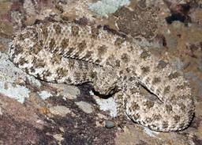

ナゾロジー
https://nazology.kusuguru.co.jp
身近に潜む科学現象から、ちょっと難しい最先端の研究まで、その原理や面白さを分かりやすく伝えられるようにニュースを発信していきます。最新の科学技術やおもしろ実験、不思議な生き物を通して、もう一度、皆さんの心にナゾを解き明かす「ワクワクの火」を灯したいと思っています。
フィード
相手が失敗したと聞いた瞬間、人は自分の成功を隠す
ナゾロジー
アメリカのライス大学などで行われた研究によって、自分の成功を打ち明けるかどうかは直前に相手が何を話したかで激変し、相手が失敗を明かした直後には、成功を語る気持ちが、相手が自分の結果を明かさなかった場合の4分の1以下にまで落ち込むことが明らかになりました。 自慢したいから成功を語り、恥ずかしいから失敗を隠す。 そう説明されてきた行動の裏で、人が重く見ていたのは自分の見え方よりも、目の前の相手の痛みのほうでした。 研究者は「誰かが苦労したと打ち明けたとき、人は張り合うためではなく、慰めるために自分の苦労を持ち出すのです」と述べています。 では、自分のほうがうまくいってしまったとき、人はその気まずさをどう処理しているのでしょうか。 研究内容の詳細は『Organizational Behavior and Human Decision Processes』にて発表されました。
12時間前
気体に圧力を与える根本、「原子1個の衝突」を検出することに成功 1
1
ナゾロジー
気体の圧力とは、目に見えない分子が無数にぶつかり続ける押し合いの合計で、その1回1回は小さく多すぎて、まとめてしか測れないもの、と語られてきました。 しかしアメリカのイェール大学（Yale University）などで行われた研究によって、気体の粒がたった1個ぶつかる瞬間が、1発ずつ検出されました。 検出器になったのは、レーザー光で宙に浮かべた直径100ナノメートルのガラスの球です。 研究では、クリプトン、キセノン、六フッ化硫黄という3種類の気体について、1個ずつの衝突が確かめられました。 研究内容の詳細は『arXiv』にて公開されており2026年8月7日に『Physical Review Letters』への掲載が受理されました。
13時間前

ヘビの尾にある「クモ」はすべて皮膚でできていた
ナゾロジー
岩の上をクモが走る。近づいた鳥が最後に見るのは、その下で口を開けたヘビです。 イランに住むクモの尾を持つクサリヘビ(Pseudocerastes urarachnoides)は、尾の先にクモそっくりの飾りを持つ、科学が知る唯一の動物です。 じっと岩に紛れ、尾だけを小刻みに揺らして鳥をおびき寄せます。 ルーアン氏は、動く尾を見ると本物のクモでないとは信じがたいと言うほどです。 ポーランド科学アカデミーとフィールド博物館の研究チームは、この「クモ」の中に骨は一本もなく、形を変えた鱗だけでできていると発表しました。 調べたのは1968年に採集され、この種の基準になっている標本1体で、マイクロCT(X線で内部を撮る装置)を使いました。 骨の代わりにあったのは、極端に作り替えられた鱗でした。 発見から半世紀、この飾りの中身はきちんと調べられていませんでした。 骨のないクモは、どうやって形を保ってい…
16時間前

ADHDの人は「お腹の不調」が約1.5倍で便秘は2倍の傾向、190万人の分析
ナゾロジー
実はわたくしライターの天道もADHDでございます。 ADHD(注意欠如・多動症)は、世界で子どもの約5%、大人の3〜4%にみられます。 診断の報告は、この40年で急に増えました。 自閉スペクトラム症で腸の不調が多いことはよく知られていましたが、ADHDではまとまった検証がありませんでした。 腸と脳をつなぐ経路の乱れがADHDに関わるとされてきましたが、仕組みははっきりしていません。 ウォーリック大学の研究チームは、ADHDの人では便秘などの消化器の症状が多いと発表しました。 23の研究、合わせて190万人超のデータをまとめ直した分析で、ADHDのない人と比べています。 ADHDの腸の症状に絞った系統的レビューは、これが初めてです。 消化器の症状全体では、ADHDの人はそうでない人に対してオッズ比で1.48倍でした。 便秘はオッズ比で1.97倍。 炎症性腸疾患のように腸そのものの病気と診断…
20時間前
運動しなくても「クレアチン」12週間で筋肉と記憶の指標が改善、45〜65歳で
ナゾロジー
ジムの会員証は財布に入ったまま、今年も9月になってしまった。 年をとると筋肉は減り、脂肪は増えていきます。 年をとって脂肪が増え筋肉が減る状態はサルコペニア肥満と呼ばれ、健康リスクと体の機能の低下に結び付きます。 運動が効くと分かっていても、続けられる人は多くない。 Jisun Chun氏らの研究チームは、運動をしない中高年でもサプリの「クレアチン」をとると除脂肪量(体重から脂肪を除いた重さ)と筋力が増えたと報告しました。 対象は運動不足で健康な45〜65歳、期間は12週間、比べたのは偽薬です。 クレアチンは体の中でも作られ、肉や魚にも含まれる物質です。 蓄えられる先は、主に筋肉。 そこで、細胞がすぐに使うエネルギーの元になる分子「ATP」を素早く作り直す手伝いをします。 運動と組み合わせれば筋力が伸びることは、以前から知られていました。 筋トレの効果を高める目的で、スポーツの分野で長く…
1日前
高知能のカギは「弱いつながり」にあった――「つながるほど賢い」わけではない
ナゾロジー
アメリカのノートルダム大学（ND）などの研究チームが831人の脳画像と知能テストの結果を調べたところ、高い知能と結びつく意外な特徴が見つかりました。 高知能の人々は、近くの場所どうしは強く結ばれる一方、遠く離れた場所へは弱いつながりが延びていたのです。 しかも、弱いつながりが、遠くに届くものほど頭のよさとの関わりが強くなっていました。 強固な結びつきだけでなく、一見頼りなさそうな「弱い橋」が重要だったのは、なぜでしょうか。 研究チームは、こうした橋が別々の働きをする場所を結び、新しい問題に合わせて協力相手を変える助けになると考えています。 研究内容の詳細は2026年1月26日に『Nature Communications』にて発表されました。
1日前
娘より息子のほうが、お産は難しい――人間もウシもゾウも、息子は母親に「高くつく」
ナゾロジー
オーストリアのウィーン大学（UNIVIE）などで行われた研究によって、娘より息子のほうがお産が難しいという傾向が、哺乳類に広く共通するものだと明らかになりました。 人間の男の子は、女の子より平均して100〜200グラム重く生まれます。 同じことが、調べられた哺乳類140種のうち3分の2で起きていました。 わずかな差が、母親と赤ちゃん自身の危険を押し上げていたのです。 論文では「大きな息子を産んで得られるものと、出産時の合併症や死亡のリスクとが釣り合っている」と記述されています。 大きな息子はリスクを負ってでも生む価値があるというわけです。 研究内容の詳細は2026年に『The Anatomical Record』にて発表されました。
1日前
「オスになっちゃう」- ナタウナギ温かい水で性転換する
ナゾロジー
夏の田んぼの水は、足首までつかるとお風呂の残り湯みたい。 中国で盛んに養殖されている淡水魚のタウナギは、まずメスとして育ち、やがてオスに変わります。 どんな仕組みで変わるのかは、よく分かっていませんでした。 研究チームは、このタウナギを暖かい水で半年間育てると、卵巣が精巣へ変わり始めた魚がはっきり増えたと報告しました。 使ったのは、武漢の近くで採れた1歳半のメス。 無作為に2つに分け、片方は25〜26℃、もう片方は33〜34℃の水で6か月飼いました。 判定に使ったのは、生殖腺の組織の染色と、性別に偏って働く遺伝子の量。 半年後、卵巣の中に精巣の組織が現れた「卵精巣」の魚は、暖かい群でおよそ75%、涼しい群ではおよそ20%でした。 卵精巣は、メスからオスへ移る途中の段階です。 体の長さや重さは、2つの群で同じ程度でした。 研究チームは、仕組みが分かれば養殖で性別を制御する役に立つとみていま…
2日前
自己愛の強い人ほど「独創的で悪意のある仕返し」を思いつく傾向
ナゾロジー
「今度おごるから」の今度は、たいてい来ない。 創造性は、ふつう良いものとして語られます。芸術や科学や発明を生む力だからです。 ただ心理学には、独創的な考えをわざと他人を傷つけるために使う「悪意ある創造性」という言葉があります。 テキサス州立大学の研究チームは、自己愛が強い大学生ほど、不当な扱いへの仕返しとして独創的で有害な案を多く出したと報告しました。 対象は大学生248人で、82%が女性、平均は20歳。オンラインの調査と課題に答えました。 測ったのは仮想の場面で思いついた案であって、実際の行動ではありません。 過去に悪意ある創造性を発揮したことがある人も、同じように独創的で有害な案を出しました。 ただし、年齢や性別、問題解決への自信、腹立ちの程度も入れたモデル全体で説明できたのは、有害で独創的な案の数の違いの9%ほどです。 どんな課題で、仕返しの案を出してもらったのでしょうか。 研究内…
2日前
人の「うんち」を混ぜたコンクリートが42%強くなった
ナゾロジー
朝、トイレのレバーを回す。流れていった先のことを考える人は、まずいない。 建物の土台になるコンクリート。その材料のセメントを作るときに、大量の二酸化炭素が出ます。石灰石を熱して加工する工程は、世界でも有数の排出源。 セメントの一部を廃棄物の炭に置き換える試みは、木くずやもみ殻で先にありました。 インドのマニパル大学ジャイプール校の研究チームは、し尿の処理施設に集まる汚泥を炭にしてセメントの一部と置き換えると、コンクリートが強くなったと発表しました。 実験室の試験体で、セメントの10%をこの炭に置き換え、91日かけて固めた配合です。 曲げ強度（曲げる力への強さ）は通常より42%、圧縮強度（押しつぶす力への強さ）は21%高くなりました。 実際の環境で同じ強さが出るかは、これから確かめる段階です。 炭は、多いほどよいのでしょうか。 研究内容の詳細は2026年9月5日に『Scientific R…
2日前